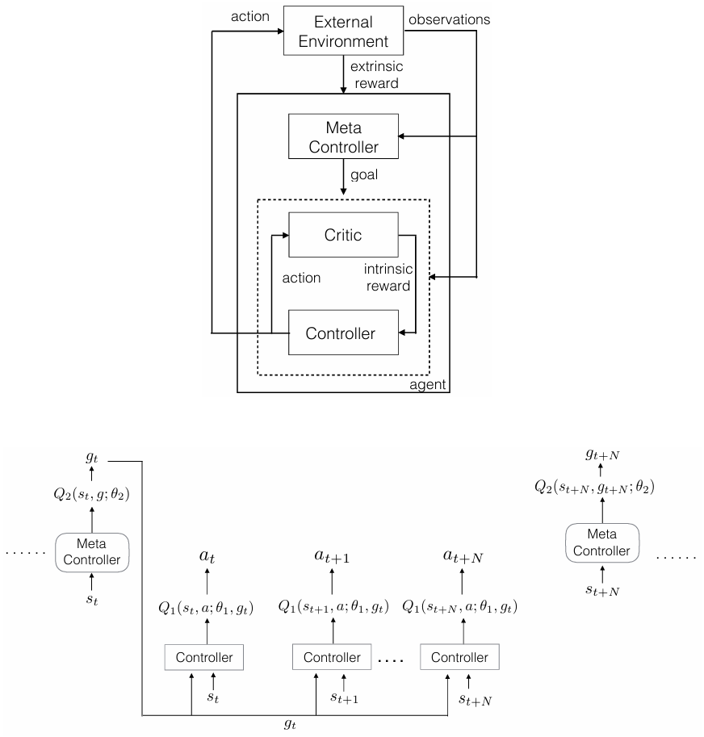

目次
Overview
"Hierarchical Deep Reinforcement Learning: Integrating Temporal Abstraction and Intrinsic Motivation" は、h-DQN (階層型Deep Q-Network) を提案しています。このモデルは、異なる時間スケールで動作する階層的な価値関数を統合することで、内発的に動機づけられた探索行動を促し、報酬が遅延する環境において効率的な探索を実現します。このページでは、その内容を順に追っていきます。
Abstract
- スパースなフィードバックの環境で行動を学ぶことは、強化学習において大きな課題である。
- 探索が不十分で、エージェントがロバストな方策を学習できないことが多い。
- 内発的に動機づけられたエージェントは、新たな行動を探索できる。
- h-DQN（階層型DQN）は、異なる時間スケールで動作する階層的な行動価値関数と、内発的動機づけを用いた深層強化学習を統合するフレームワークである。
- 上位レベルのQ関数は、内発的目標に基づいた方策を学習し、下位レベルの関数は与えられた目標を達成するための基本的な行動に基づいた方策を学習する。
- 提案手法の有効性を、非常にスパースで遅延したフィードバックが存在する2つの問題で実証する：（1）複雑で離散的な確率的意思決定プロセス、（2）古典的なATARIゲーム「モンテズマの復讐」。
Conclusion
- h-DQNを提案し、異なる時間スケールで動作する階層的な価値関数を持つフレームワークを構築した。
- 価値関数を時間的に分解することで、エージェントが内発的に動機づけられた行動を行い、遅延報酬のある環境で効率的な探索が可能になる。
- エンティティと関係の空間で内発的動機をパラメータ化することにより、時間的に拡張された探索を行うエージェントを構築する有望な手段を提供できる。
- 将来的には、h-DQNにおける目標の代替的なパラメータ化の可能性も探求する予定である。
- 現在のフレームワークには、以下のような欠けている要素がある：（1）生のピクセルデータからオブジェクトを自動的に分離する機能、（2）短期記憶機能。
- vanilla DQNで学習された状態抽象化は、構造化や十分な構成性が不足している。
- 最近の研究では、深層生成モデルを使用してピクセルデータからオブジェクトや姿勢、位置などの多様な要因を分離する方法が検討されている。
- 本研究が、h-DQNと画像生成モデルの組み合わせの動機づけとなることを期待する。
- 長期的な依存関係に対応するために、エージェントが過去の目標、行動、表現の履歴を保存する必要がある。
- 最近の研究では、強化学習と再帰型ネットワークを組み合わせた手法も検討されている。
- より複雑な非マルコフ環境に対応するためには、柔軟なエピソード記憶モジュールを取り入れることが必要である。
Model
- 状態 \( s \in S \)、行動 \( a \in A \)、および遷移関数 \( T : (s, a) \rightarrow s' \) で表されるマルコフ決定過程（MDP）を考える。
- この枠組みで動作するエージェントは外部環境から状態 \( s \) を受け取り、行動 \( a \) を取ることで新たな状態 \( s' \) へ遷移する。
- 外因的報酬関数を \( F : (s) \rightarrow R \) と定義する。
- エージェントの目標は、この関数を長期にわたって最大化することである。
- 例）エージェントの生存時間やゲームのスコアなど。
- MDPにおける効果的な探索は、良い制御方策を学習するうえで重要な課題である。
- \(\varepsilon\)-greedyのような手法は局所的な探索には有効だ、状態空間の異なる領域を探索する動機をエージェントに与えることはできない。
- この問題に対処するために、目標 \( g \in G \) の概念を利用し、エージェントに内発的な動機を与える。
- エージェントは、外因的な累積報酬和を最大化するために、目標の順序を設定し、それを達成することに集中する。
- 各目標 \( g \) に対する方策 \( \pi_g \) を定義するために、オプションの時間的抽象化を利用する。
- エージェントは、これらのオプション方策を学習すると同時に、追従するべき最適な目標の順序も学習する。
- 各 \( \pi_g \) を学習するために、エージェントには批評者（クリティック）があり、エージェントが目標を達成できるかどうかに基づいて内因的な報酬を提供する。
- 図1に示すように、エージェントはコントローラとメタコントローラからなる2段階の階層構造を使用する。 